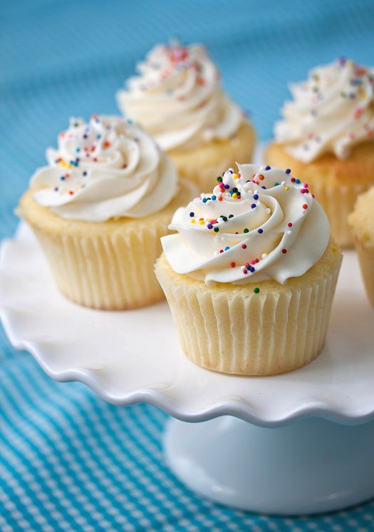

Vanilla cupcakes

Vanilla cupcakes are delightful treats loved by many for their simplicity and classic flavor. These moist and
fluffy cakes are infused with the sweet aroma of vanilla extract, creating a comforting and familiar taste.
Topped with a swirl of creamy vanilla buttercream frosting, they are a perfect indulgence for any occasion, from
birthday parties to afternoon tea gatherings. Whether enjoyed as a homemade treat or purchased from a bakery, vanilla
cupcakes never fail to evoke feelings of joy and nostalgia with each delicious bite.
Ingredients
- ¾ cup superfine sugar
- ⅔ cup butter, softened
- 3 large eggs
- 1 ½ cups self-rising flour
- 1 teaspoon vanilla extract
Steps:
- Gather all ingredients. Preheat the oven to 350 degrees F (175 degrees C). Grease a
12-cup muffin tin or line cups with paper liners.
- Beat sugar and butter together in a large bowl with an electric mixer until
light and fluffy. Add eggs one at a time, beating well after each addition.
- Beat in vanilla extract. Stir in flour just until mixed; spoon batter into the
prepared muffin cups, filling each 3/4 full.
- Bake in the preheated oven until the tops spring back when lightly pressed, 18 to 20 minutes. Cool
in the tin briefly before transferring to a wire rack to cool completely.